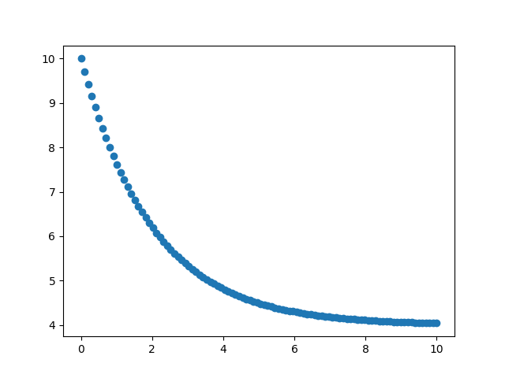

Olasılıksal Calculus (Stochastic Calculus)
Wiener Süreçleri
Ayrıksal olarak işlediğimiz $X_t$'yi sürekli ortamda şöyle geliştirebiliriz; Yeni bir değişken tanımlayalım, ${ X_t^{\Delta}, t \ge 0 }$ kronolojik olarak sıralanmış rasgele değişkenler olacaklar, fakat artık $t$ artık bir tamsayı / indis değil, bir reel sayı. Finansal varlıklar, senetler tabii ki ayrıksal olarak hesaplanırlar, mesela her günün kapanış fiyatı baz alınırak, fakat fiyatların dalgalanışına sürekli zaman süreci olarak bakmak matematiksel olarak bazı hesapların kolaylaşmasını sağlıyor.
Öyle bir rasgele (stochastic) süreç ${ X_t^{\Delta}, t \ge 0 }$ düşünelim ki her eşit zaman adımı $\Delta t$ içinde 1/2 olasılıkla $\Delta x$ kadar yukarı ya da aşağı inecek. $n$ adım sonrası zaman anı $t = n \cdot \Delta t$ sürecin içinde olduğu konum
$$ X_t^{\Delta} = \sum_{k=1}^{n} Z_k \Delta x = X_n \Delta x $$
olacaktır, ki $Z_k = -1/+1$ değerini $1/2$ şansla verebilecek rasgele değişken. Böylece $Z_1 \Delta x,Z_2 \Delta x$ artışları ortaya çıkıyor, bu artışlar birbirinden bağımsızdır, ve $1/2$ şans ile $-\Delta x$ ya da $\Delta x$ değerine sahiptir. Bazı hesaplar
$$ E[X_t^{\Delta}] = 0 $$
çünkü beklenti operatörü toplama nüfuz edebilir, ve $E[Z_k] = 0$. Ayrıca,
$$ Var(X_t^{\Delta}) = (\Delta x)^2 Var(X_n) = (\Delta x)^2 \cdot n$$
çünkü $Var(Z_k) = 1,Var(X_n)=n$. Ayrıca önce belirttik, $t = \Delta x \cdot n$, cebirsel değişim ile $n = t / \Delta t$, o zaman üstteki,
$$ Var(X_t^{\Delta}) = t \cdot \frac{(\Delta x)^2}{\Delta t} $$
Şimdi $\Delta t,\Delta x$'i çok küçültelim. Fakat bu sürecin bir sonsuza gidip patlamaması, yani makul bir limitinin olması için $Var(X_t^{\Delta})$ sonlu (finite) olmalıdır. Diğer yandan varyans sıfır a da yaklaşmamalıdır, çünkü o zaman bu süreç rasgele olmaz (hiç sapma yok ise rasgelelik kalmamış demektir). Demek ki bize bir sonsuz olmayan bir tam sayı verecek bir seçim yapmak lazım, bunu da
$$\Delta t \to 0, \Delta x = c \cdot \sqrt{\Delta t}$$
olarak yapmamız gerekir, ki böylece
$$Var(X_t^{\Delta}) \to c^2t$$
olur.
$\Delta t$'nin ufak olduğu durumda $n = t/\Delta t$ doğal olarak büyük olur. Bu derece büyüklüklerde olanlara sonuşur (asymptotic) bağlamda olarak bakabiliriz, ayrıksal versiyondaki rasgele değişken $X_n$ yaklaşıksal olarak $N(0,n)$ dağılımına sahiptir, o zaman tüm $t$'ler için (dikkat sadece $t = n \Delta t$ olan $t$'ler için değil) $X_t^{\Delta} \sim N(0, n(\Delta x)^2) \sim N(0, c^2t)$ dağılımına sahip olacaktır.
Yani ${ X_t^{\Delta}, t \ge 0 }$'nin limitli süreci olarak elde ettiğimiz yeni ${ X_t, t \ge 0 }$'nin $\Delta x = c \sqrt{\Delta t}, \Delta t \to 0$ iken şu özellikleri vardır,
1) $X_t$ tüm $t \ge 0$ için $N(0,c^2t)$ dağılıma sahiptir.
2) ${ X_t, t \ge 0 }$ bağımsız adımlara sahiptir, mesela $0 \le s < t, X_t-X_s$ değeri $X_s$'den bağımsızdır, çünkü ${ X_t, t \ge 0 }$'yi tanımlamak için kullandığımız rasgele yürüyüş ${ X_n, t \ge 0 }$ bağımsız adımlara sahiptir.
3) $0 \le s < t$ için artış $X_t-X_s$'in dağılımı $N(0, c^2 \cdot (t-s))$'tir, yani herhangi bir artışın dağılımı sadece ve sadece $t-s$'in büyüklüğüne bağlıdır. Tabii bu özellik aslında (i), (ii) ve normal dağılımların özelliklerinin doğal bir uzantısı.
Sürekli zamanda tanımlı olan rasgele süreç ${ X_t, t \ge 0 }$ eğer (1)-(3) şartlarına uygunsa bu sürece Wiener süreci, ya da Brownian süreci ismi verilir, sürecin 0 anında $X_0=0$ olarak başladığı kabul edilir. Eğer $c=1$ alınırsa ortaya çıkan sürece standart Wiener süreci denir ve çoğu kaynakta bu süreç $W$ harfiyle tanımlanır, yani ${ W_t, t \ge 0 }$.
Standart Wiener süreçleri için, $0 \le s < t$ bağlamında, şu alttakiler geçerlidir,
$$ E[W_t] = 0, Var(W_t) = t $$
$$ Cov(W_t,W_s) = Cov(W_t-W_s+W_s, W_s) $$
$$ = Cov(W_t-W_s,W_s) + Cov(W_s,W_s) $$
$$ = 0 + Var(W_s) = s $$
İlginç bir durum şudur: Wiener sürecinin türevi yoktur [4, sf. 59]!.
Rasgele Entegraller (Stochastic Integrals)
Farz edelim ki $f(\cdot)$ $[a,b]$ aralığında türevi olan sürekli bir fonksiyon. Rasgele entegral şu şekilde tanımlanabilir, $\forall i$
$$
\int_{ a}^{b} f(t) \mathrm{d} W_t \equiv
\lim_{ n \to \infty, |t_i-t_{i-1}| \to 0 }
\sum_{i=1}^{n} f(t_{i-1}) ( W_{t_i} - W_{t_{i-1}})
$$
Tanımın sağındaki bir Riemann toplamıdır. Dikkat, burada $dW_t$ "türev almak" olarak görülmemeli çünkü $W_t$'nin türevi yok. Üstte bir entegral tanımı yaptık ve o tanıma tekabül eden açılımı belirttik. Yani bu tanımı ne zaman görürsek içinde limit olan ifadeyi hatırlamamız lazım.
Not: $W_{t_i} - W_{t_{i-1}}$'in daha önce normal dağılımda olduğunu görmüştük. Demek ki aralıklar bir tür "beyaz gürültü"dür (white noise).
Bir numara / tanım değiştirme durumu daha: Diyelim ki parçalı entegral yöntemini kullanabiliyoruz,
$$ \int u \cdot \mathrm{d} v = uv - \int v \cdot \mathrm{d} u $$
Ana formülü $u,v$ bazında bölüştürelim,
$$ \int_{a}^{b} \underbrace{f(t)}{u}\underbrace{\mathrm{d} W_t}{\mathrm{d} v}$$
O zaman
$$ \int_{a}^{b} f(t)\mathrm{d} W_t = f(b)W_b - f(a)W_a - \int_{a}^{b} W_t \mathrm{d} f(t) $$
Genellikle eşitliğin sol tarafının kullanılan, bilinen tanımı budur. Rasgele entegral dediklerinde bahsedilen bu yani. Bir ek güzellik, $f$'in türevi alınabildiği için çoğunlukla $df(t)$ yerine $f'(t)$ de kullanılabilir.
Parçalı entegral yöntemi iyi işledi, üstelik işi kitabına uygun yapıyor - $u,dv$ bölüştürmesi yaparken $dv=dW_t$ elde ettik, bu sayede $v$'ye atladık, ki bu tekrar bize $W_t$ verdi.
Rasgele Diferansiyel Denklemler (Stochastic Differential Equations -SDE-)
Wiener süreçleri sıfır etrafında salınan bir süreçtir, fakat uygulamalarda bize büyüyen seriler gerekebilir, bir trendi ya da kayması (drift) olacak şekilde. Herhangi bir sabit değeri $\sigma^2$ ve $\mu$ ile genelleştirilmiş bir Wiener süreci ${ X_t; t>0}$'i şöyle gösterebiliriz [4, sf. 64],
$$ X_t = \mu \cdot t + \sigma \cdot W_t, \qquad t>0 \qquad (1) $$
Bu süreç $t$ anında $N(\mu,\sigma^2t)$ dağılımına sahip olacaktır. Ufak bir zaman artışı $\Delta t$ için
$$ X_{t + \Delta t} - X_t = \mu \cdot \Delta t + \sigma (W_{t+\Delta t}-W_t)$$
$\Delta t \to 0$ iken diferansiyel notasyonunu kullanabiliriz,
$$ dX_t = \mu \cdot dt + \sigma dW_t $$
Bu formül (1)'in değişik bir halinden ibarettir. Üsttekini entegral formunda da yazabiliriz,
$$ X_t = \int_{0}^{t}\mu \mathrm{d} s + \int_{ 0}^{t} \sigma \mathrm{d} W_s $$
Dikkat edersek daha önceki rasgele entegral tanımından, hemen şu hesabı yapabildiğimizi görürüz, $\int_{0}^{s} \mathrm{d} W_s = W_t - W_0 = W_t$, çünkü $W_0=0$.
Ornstein-Uhlenbeck Süreçleri
[3, sf. 46]'da bahsedilen bu formül, ve hayat yarılama zamanı arasındaki ilişkiyi daha iyi anlamak için önce formülün nasıl türetildiğini görelim, ardından beklentisi üzerinden hayat yarılama zamanını bulabileceğiz. Ortalamay dönüş bölümünde senet üzerinde hesapsal bir örnek te veriyoruz.
$$ dX_t = \alpha(\mu - X_t)dt + \sigma dW_t $$
Bazen tüm formül $dt$ ile bölünüp şu şekilde de belirtilebiliyor,
$$ \frac{dX_t}{dt} = \alpha(\mu - X_t) + \sigma W_t' $$
Rasgele diferansiyel denklemlerde $dW_t$, $W_t'$ benzeri ifadeler ne demektir? $dW_t$ mesela "beyaz gürültü" olarak tanımlanır, peki niye gürültü için bilinen normal dağılım denkleme rasgele değişken olarak dahil edilmemiştir? Bunun sebebi üsttekinin bir diferansiyel denklem olması, çözüm için bir şekilde entegral alınca bir rasgele değişkenin çarpımı üzerinden entegral almak gerekirdi. Onun tanımı belli değişimi üzerinden entegralini almak için geliştirilmiş rasgele calculus var, bu araçları devreye sokabiliriz.
Ornstein-Uhlenbeck formülüne dönelim, O-U aslında ortalamaya dönüşün (mean-reversion) SDE formunda belirtilmiş halidir. $X_t$ yerine $y_t$ kullanalım, ve + kullanıp $\lambda$ ekleyelim, ki [3] notasyonuna uysun,
$$ dy_t = (\lambda y_t + \mu)dt + dW_t $$
Bu formül $\mu$'den ne kadar uzaklaşılırsa, ve eğer $\lambda$ eksi ise o kadar zaman serisi üzerinde ters yönde bir baskı yaratacaktır. $\lambda$'nin ne olduğu, büyüklüğü ve hatta eksi mi artı mı olduğu veriden hesaplanır, bu hesap bize zaman serisi hakkında önemli sinyaller verecek. Eğer $\lambda$ eksi değil ise ortalamaya dönüş sonucuna varamayacağız mesela.
Üstteki denklemi çözelim. Önce iki tarafı da $e^{-\lambda t}$ çarpalım, ve tekrar düzenleyelim,
$$ e^{-\lambda t}dy_t = e^{-\lambda t}(\lambda y_t + \mu)dt + e^{-\lambda t} dW_t $$
$$ e^{-\lambda t}dy_t - e^{-\lambda t}(\lambda y_t + \mu)dt = e^{-\lambda t} dW_t \qquad (2) $$
Şimdi $e^{-\lambda t}(\lambda y_t + \mu)$'in diferansiyeline bakalım, bu bize ileride lazım olacak,
$$ d(e^{-\lambda t}(\lambda y_t + \mu)) = -\lambda e^{\lambda t} (\lambda y_t + \mu) dt + e^{\lambda t} \lambda dy_t $$
$dt$ nereden geldi? Hatırlayalım
$$ d(uv) = u dv + v du $$
$d(e^{?})/dt$ bize $e$'nin kendisini verirdi, ve $dt$ ile çarpınca, tek $dt$ üstteki görülen yerdedir. Devam edelim, iki üstteki denklemin sağ tarafının (2)'nin sol tarafı ile aynı olduğunu görüyoruz (zaten bütün bu taklaları o eşitliğe erişmek için attık). O zaman
$$ d(e^{-\lambda t}(\lambda y_t + \mu)) = e^{-\lambda t} dW_t $$
diyebiliriz. Şimdi iki tarafın entegralini alalım,
$$ \int_{0}^{t} d(e^{-\lambda s}(\lambda y_s + \mu)) = \int_{0}^{t} e^{-\lambda s} \mathrm{d} W_s $$
$$ e^{-\lambda s}(\lambda y_s + \mu) \big|{0}^{t} = \int{0}^{t} e^{-\lambda s} \mathrm{d} W_s $$
$$ e^{-\lambda t}(\lambda y_t + \mu) - \lambda y_0 - \mu = \int_{0}^{t} e^{-\lambda s} \mathrm{d} W_s $$
$$ e^{-\lambda t}\lambda y_t + e^{-\lambda t}\mu - \lambda y_0 - \mu = \int_{0}^{t} e^{-\lambda s} \mathrm{d} W_s $$
$$ e^{-\lambda t}\lambda y_t = - e^{-\lambda t}\mu + \lambda y_0 + \mu + \int_{0}^{t} e^{-\lambda s} \mathrm{d} W_s $$
$$ \lambda y_t = - \mu + e^{\lambda t} \lambda y_0 + e^{\lambda t}\mu + \int_{0}^{t} e^{\lambda (t-s)} \mathrm{d} W_s $$
$$ y_t = \frac{-\mu}{\lambda} + e^{\lambda t} y_0 + e^{\lambda t}\frac{\mu}{\lambda} + \frac{1}{\lambda}\int_{0}^{t} e^{\lambda (t-s)} \mathrm{d} W_s $$
$$ y_t = \frac{-\mu}{\lambda} ( 1 - e^{\lambda t}) + e^{\lambda t} y_0 + \frac{1}{\lambda}\int_{0}^{t} e^{\lambda (t-s)} \mathrm{d} W_s $$
Nihayet $y_t$'ye eriştik. Şimdi iki tarafın beklentisini alırsak, entegral içine nüfuz eden bu işlem ardından $dW$ beklentisi doğal olarak sıfıra gidip yokolacak, geri kalanlar,
$$ E[y_t] = y_0 e^{\lambda t} - \frac{\mu}{\lambda} ( 1 - e^{\lambda t}) \qquad (3) $$
Zaman Yarılaması
Radyoaktif çürüme (decay), mesela Uranyum 238 için, alttaki denklemle modellenir [5, sf. 269],
$$ \frac{\mathrm{d} u}{\mathrm{d} t} = - \lambda u$$
$u(t)$ formülü $t$ anında ne kadar madde olduğu, $\lambda > 0$ ise çürüme oranını kontrol ediyor. Üstteki denklemin çözümü,
$$ u(t) = c e^{-\lambda t} $$
ki $c$ başlangıç madde miktarı. Bu tür konularda hayat yarılama zamanı (half-life) kabaca madde yokoluşu hakkında fikir yürütmek için iyi bir ölçüttür, bu süre, $u(t)$'nin başlangıç maddesinin yarısı, yani $1/2 c$ olduğu $t^\ast$ anıdır,
$$ u(t^\ast) = c e^{-\lambda t^\ast} = 1/2 c$$
$$ e^{-\lambda t^\ast} = 1/2 $$
İki tarafın log'unu alıp tekrar düzenleyelim,
$$ t^\ast = -\log(0.5)/\lambda $$
$$ t^\ast = \log(2)/\lambda $$
bize hayat yarılama zamanını verir. Şimdi (3)'e bir daha bakalım, burada çürüme $y_0 e^{\lambda t}$ teriminde. O zaman hayat yarılama zamanı $-\log(2)/\lambda$ ile; eksi çünkü O-U denkleminde $\lambda$'nin negatif olmasına izin verdik.
Bazı örnek değerler ile bir grafik,
y0 = 10; lam=-0.5;mu=2
x = np.linspace(0,10,100)
y = y0*np.exp(lam*x) - mu/lam* (1-np.exp(lam*x))
plt.scatter(x,y)
plt.savefig('tser_stoc_11.png')
plt.hold(False)

import statsmodels.formula.api as smf
import pandas as pd
import numpy as np
def halflife(df,col):
df['ylag'] = df[col].shift(1)
df['deltaY'] = df[col] - df['ylag']
results = smf.ols('deltaY ~ ylag', data=df).fit()
lam = results.params['ylag']
halflife=-np.log(2)/lam
return lam, halflife
Kaynaklar
[1] Shalizi, Advanced Data Analysis from an Elementary Point of View
[2] Rupert, Statistics and Data Analysis for Financial Engineering
[3] Chan, Algorithmic Trading
[4] Franke, Statistics of Financial Markets
[5] Olver, Applied Mathematics